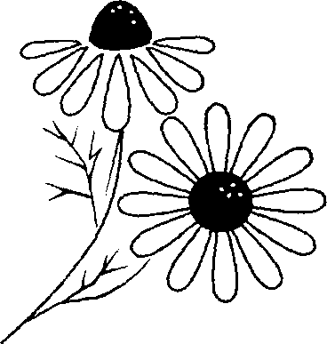
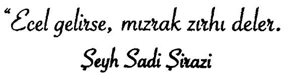

Annesi, lösemiyle savaşan altı yaşındaki oğluna bakarken dalıp gitmişti. Kalbi, acı içinde olmasına rağmen, kararlılık duygusunun da etkisini hissediyordu. Her ebeveyn gibi o da oğlunun büyümesini ve umutlarını gerçekleştirmesini istemişti. Ama bu, artık mümkün değildi. Löseminin buna fırsat tanıması olası değildi. Oysa oğlunun hayallerini gerçekleştirmesini istiyordu.
“Bob! Büyüyünce ne olmak istediğini hiç düşündün mü? Hayatında neler olmasını dilediğin ve hayal ettiğin oldu mu?” diye sordu.
Bob beklemeden cevap verdi:
“Anneciğim, ben büyüyünce hep itfaiyeci olmak istedim.” Anne de gülümsedi ve:
“Dilediğini gerçekleştirebilecek miyiz, bir bakalım,” dedi.
Daha sonra, Arizona’daki itfaiye müdürlüğüne gitti ve itfaiyeciler ile tanıştı. Onlara oğlunun son isteğinden söz etti ve oğlunun itfaiye arabasına binip, şehirde küçük bir tur atmasının mümkün olup olmadığını sordu.
“Bundan daha iyisini de yapabiliriz,” dedi itfaiyecilerden biri. “Eğer oğlunuzu çarşamba sabahı saat yedide hazır ederseniz, onu o gün şeref konuğu yapar, itfaiyeci kimliğine büründürürüz. Bizimle itfaiye müdürlüğüne gelir, bizimle yemek yer, yangın söndürmeye gelir. Hatta bize ölçülerini verirsen, ona üzerinde Arizona itfaiyecilerinin sarı renk üzerine işlenmiş ambleminin olduğu gerçek bir itfaiyeci kostümü diktirir, lastik botları ısmarlarız.”
Üç gün sonra, itfaiyeci Bob’u aldı, ona elbiselerini giydirdi ve hasta yatağından itfaiye arabasına kadar eşlik etti. Bob, itfaiye arabasına kuruldu ve müdürlüğe doğru yol almaya başladı. Kendini çok mutlu hissediyordu.
O gün Arizona’da tam üç yangın ihbarı olmuştu. Değişik itfaiye arabalarına, hatta itfaiye müdürünün özel arabasına da binmişti. Yerel televizyonlar da onu izleyip çekmişlerdi. Hayallerinin gerçek olması, gösterilen sevgi ve ilgi, Bob’u o kadar etkilemişti ki, doktorların söylediğinden tam üç ay daha fazla yaşamıştı. Bir gece bütün yaşam belirtileri dramatik bir şekilde yok olmaya başlayınca, hiç kimsenin yalnız ölmemesi gerektiğine inanan başhemşire aile bireylerini hastaneye çağırdı. Daha sonra Bob’un itfaiyede geçirdiği günü hatırladı ve itfaiye müdürlüğüne telefon açıp, Bob’un bu dünyaya veda ederken yanında, özel kıyafetleri içinde bir itfaiyecinin bulundurulmasının mümkün olup olmayacağını sordu, itfaiye müdürü:
“Bundan daha iyisini de yapabiliriz. Beş dakika içinde oradayız. Yalnız, acaba bize bir iyilik yapar mısınız? Sirenlerin çaldığım duyduğunuzda, yangın olmadığı anonsunu yaptırabilir misiniz? Sadece itfaiyecilerin önemli bir meslektaşlarını ziyareteg eldiklerini söyleyiniz ve lütfen onun odasının penceresini açınız?” diye yanıtladı.
Yaklaşık beş dakika sonra çengel ve merdiven taşıyan kamyonet ulaştı. Merdiveni açtı ve Bob’un üçüncü kattaki odasına yaklaştı. Tam on dört itfaiyeci Bob’un odasına tırmandılar. Annesinin izniyle onu kucakladılar ve ona, onu ne kadar sevdiklerini söylediler. Ölümle pençeleşen Bob itfaiye müdürüne baktı ve:
“Efendim, ben şimdi gerçekten itfaiyeci miyim?” diye sordu.
“Bundan şüphen mi var Bob?” diye yanıtladı müdür.
'i
Bu kelimelerden sonra Bob gülümsedi ve gözlerini sonsuza dek kapattı.
Belki unuttunuz, belki hatırlayamıyorsunuz, belki de çok duygusuz, çok katı oldunuz; ama bilin ki hayat sevgi ve umut saçmaktadır. Eğer bunu okuyunca gözleriniz dolmuyorsa sizin için yapılacak bir şey kalmamış demektir. Yok eğer doluyorsa, o zaman sevdiklerinizin kıymetini bilin ve gerçek sevginizi ortaya koyun, lütfen.

